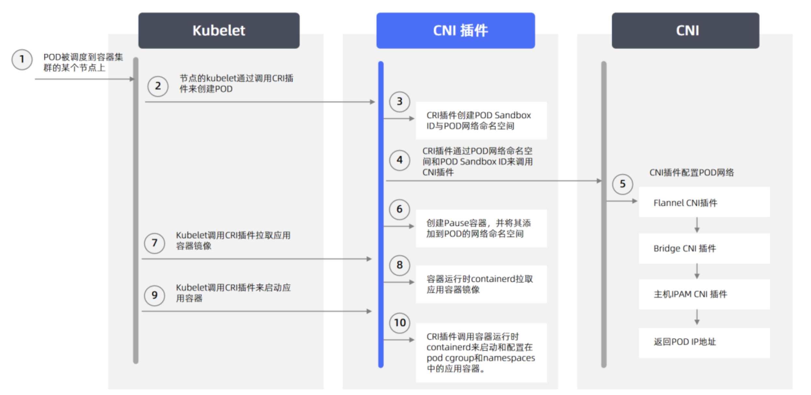

容器网络接口（CNI）
详解 cni 中 flannel、calico 的原理实现。
1. CNI交互逻辑
1.1 Pod IP地址分配机制

1.2 CRI插件与CNI插件的交互
1.3 CNI插件间的交互
2. flannel 3种模式

UDP、VXLAN模式基于三层网络，host-gateway需要在二层网络同一个交换机下才能实现。
2.1 vxlan模式
VXLAN是Flannel默认和推荐的模式。当我们使用默认配置安装Flannel时，它会为每个节点分配一个24位子网，并在每个节点上创建两张虚机网卡： cni0 和 flannel.1 。 cni0 是一个网桥设备，类似于 docker0 ，节点上所有的Pod都通过veth pair的形式与 cni0 相连。 flannel.1 则是一个VXLAN类型的设备，充当VTEP的角色，实现对VXLAN报文的封包解包。
2.1.1 节点内通信
2.1.2 跨节点通信
大致过程:
- 发送端：在PodA中发起 ping 10.244.1.21 ，ICMP 报文经过 cni0 网桥后交由 flannel.1 设备处理。 flannel.1 设备是一个VXLAN类型的设备，负责VXLAN封包解包。 因此，在发送端，flannel.1 将原始L2报文封装成VXLAN UDP报文，然后从 eth0 发送。
- 接收端：Node2收到UDP报文，发现是一个VXLAN类型报文，交由 flannel.1 进行解包。根据解包后得到的原始报文中的目的IP，将原始报文经由 cni0 网桥发送给PodB。
哪些IP要交由 flannel.1 处理?
flanneld 从 etcd 中可以获取所有节点的子网情况，以此为依据为各节点配置路由，将属于非本节点的子网IP都路由到 flannel.1 处理，本节点的子网路由到 cni0 网桥处理。
flannel 封包过程
VXLAN的封包是将二层以太网帧封装到四层UDP报文中的过程。
原始L2帧
要生成原始的L2帧， flannel.1 需要得知：
- 内层源/目的IP地址
- 内层源/目的MAC地址
内层的源/目的IP地址是已知的，即为PodA/PodB的PodIP，在图例中，分别为10.224.0.20和10.224.1.20。
内层源/目的MAC地址要结合路由表和ARP表来获取。根据路由表①得知：
下一跳地址是10.224.1.0，关联ARP表②，得到下一跳的MAC地址，也就是目的MAC地址：Node2_flannel.1_MAC；
报文要从 flannel.1 虚拟网卡发出，因此源MAC地址为 flannel.1 的MAC地址。
要注意的是，这里ARP表的表项②并不是通过ARP学习得到的，而是 flanneld 预先为每个节点设置好的，由 flanneld负责维护，没有过期时间。
1 | |
有了上面的信息， flannel.1 就可以构造出内层的2层以太网帧：
外层VXLAN UDP报文
要将原始L2帧封装成VXLAN UDP报文， flannel.1 还需要填充源/目的IP地址。前面提到，VTEP是VXLAN隧道的起点或终点。因此，目的IP地址即为对端VTEP的IP地址，通过FDB表获取。在FDB表③中，dst字段表示的即为VXLAN隧道目的端点（对端VTEP）的IP地址，也就是VXLAN DUP报文的目的IP地址。FDB表也是由 flanneld 在每个节点上预设并负责维护的。
FDB表（Forwarding database）用于保存二层设备中MAC地址和端口的关联关系，就像交换机中的MAC地址表一样。在二层设备转发二层以太网帧时，根据FDB表项来找到对应的端口。例如cni0网桥上连接了很多veth pair网卡，当网桥要将以太网帧转发给Pod时，FDB表根据Pod网卡的MAC地址查询FDB表，就能找到其对应的veth网卡，从而实现联通。
可以使用 bridge fdb show 查看FDB表：
1 | |
源IP地址信息来自于 flannel.1 网卡设置本身，根据 local 192.168.50.2 可以得知源IP地址为192.168.50.2。
1 | |
至此， flannel.1 已经得到了所有完成VXLAN封包所需的信息，最终通过 eth0 发送一个VXLAN UDP报文：
Flannel的VXLAN模式通过静态配置路由表，ARP表和FDB表的信息，结合VXLAN虚拟网卡 flannel.1 ，实现了一个所有Pod同属一个大二层网络的VXLAN网络模型。
2.2 host-gw模式

在host-gw模式下，由于不涉及VXLAN的封包解包，不再需要flannel.1虚机网卡。 flanneld 负责为各节点设置路由 ，将对应节点Pod子网的下一跳地址指向对应的节点的IP，如图中路由表①所示。
要使用host-gw模式，需要修改 ConfigMap kube-flannel-cfg ，将 Backend.Type 从 vxlan改为host-gw，然后重启所有kube-flannel Pod即可：
1 | |
3. calico 两种网络模式
3.1 IPIP 模式
3.1.1 概要
IPIP模式是calico的默认网络架构，calico中用环境变量CALICO_IPV4POOL_IPIP来标识是否开启IPIP Mode， 如果该变量的值为Always那么就是开启IPIP，如果关闭需要设置为Never(大小写不敏感，代码里有strings.ToLower操作)。
- 从字面来理解，就是把一个IP数据包又套在一个IP包里，即把 IP 层封装到 IP 层的一个 tunnel，看起来似乎是浪费，实则不然。
- 它的作用其实基本上就相当于一个基于IP层的网桥！
- 一般来说，普通的网桥是基于mac层的，根本不需 IP，而这个 ipip 则是通过两端的路由做一个 tunnel，把两个本来不通的网络通过点对点连接起来。
- ipip 的源代码在内核 net/ipv4/ipip.c 中可以找到。
3.1.2 工作原理

Calico使用的这个tunl0设备，是一个IP隧道（IP tunnel）设备
在上面的例子中，IP包进入IP隧道设备之后，就会被Linux内核的IPIP驱动接管。IPIP驱动会将这个IP包直接封装在一个宿主机网络的IP包中，如下所示：

3.2 BGP 模式
3.2.1 概要
- 边界网关协议（Border Gateway Protocol, BGP）是互联网上一个核心的去中心化自治路由协议。
- 它通过维护IP路由表或‘前缀’表来实现自治系统（AS）之间的可达性，属于矢量路由协议。
- BGP不使用传统的内部网关协议（IGP）的指标，而使用基于路径、网络策略或规则集来决定路由。因此，它更适合被称为矢量性协议，而不是路由协议。
- BGP，通俗的讲就是讲接入到机房的多条线路（如电信、联通、移动等）融合为一体，实现多线单IP，BGP 机房的优点：服务器只需要设置一个IP地址，最佳访问路由是由网络上的骨干路由器根据路由跳数与其它技术指标来确定的，不会占用服务器的任何系统。
- BGP网络相比较IPIP网络，最大的不同之处就是没有了隧道设备 tunl0。前面介绍过
IPIP网络pod之间的流量发送tunl0，然后tunl0发送对端设备。BGP网络中，pod之间的流量直接从网卡发送目的地，减少了tunl0这个环节。
3.2.2 工作原理
参考文章
https://ost.51cto.com/posts/15845
https://juejin.cn/post/6994825163757846565